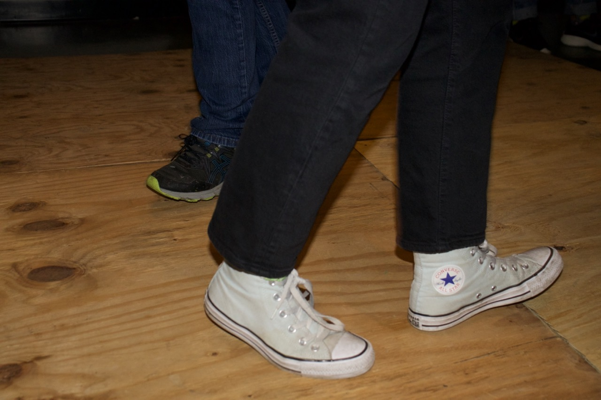
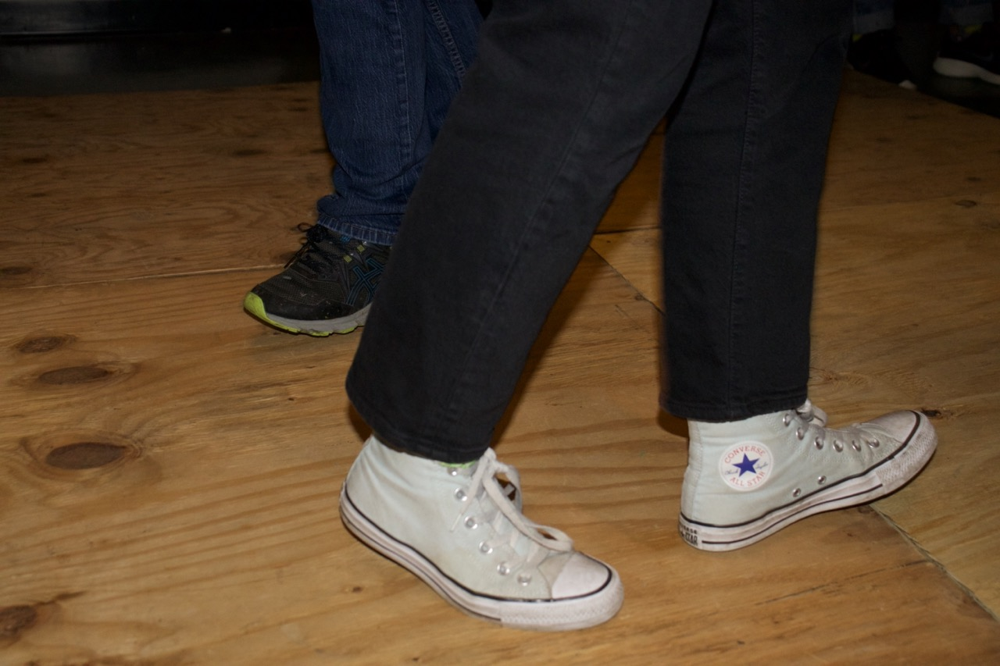
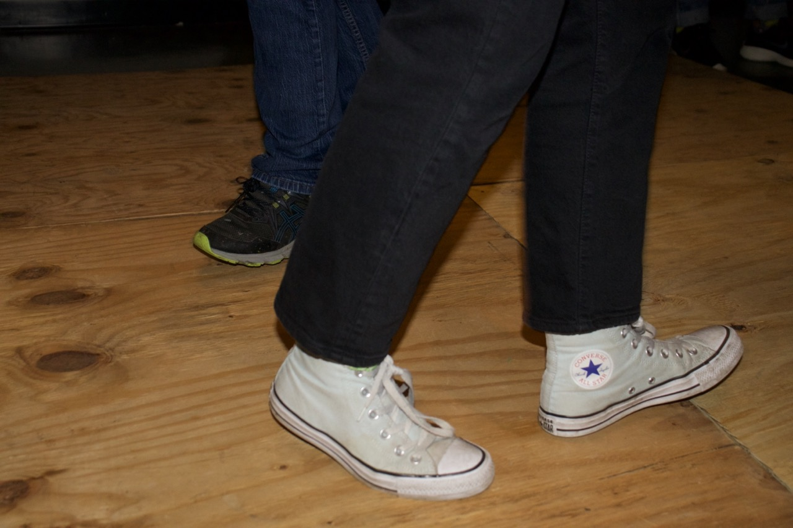

wood, contact mics, speakers, MAX MSP software, laptop, audio interface.
Communal Spectre takes place in a bare room, and consists of 4 pieces of plywood flooring, audio equipment cast off to the side, and hidden electronics. As visitors of the exhibition walk around the room, they hear the footsteps of all previous visitors all around them. The floorboards are also recording and amplifying the footsteps of any current visitors navigating the space in real time.
The piece was initially a piece about disconnection, about the multitudes of people who navigate the same spaces over and over, yet remain strangers to each other. The feeling of community is fractured into layers of sound, where there is an invisible collective navigating the space that visitors will never be able to experience physically. During the reception of the March 1st showing, the imagined tone of the piece completely changed. From the excitement of their own amplified footsteps, and the knowledge that their individual presence was of a unique importance to the room, visitors transformed the bare space into a place of great connection and joy, of dance and play.
Showings:
5/13/24 - Ivy Film Festival: New Media 2024 Exhibition
A two day showing as part of the Ivy Film Festival’s selected New Media winners. This setup was more minimal, with just a single piece of plywood flooring, and wireless headphones for a single listener, resulting in a more introspective and isolating experience than previous showings.
April 13th recording:
April 14th recording:
1/3/24 - Brown Visual Art Capstone
A 7 day installation with an accompanying closing reception.

12/6/24 - Class Final Project (VISA 1740: Time Deformations)
 
